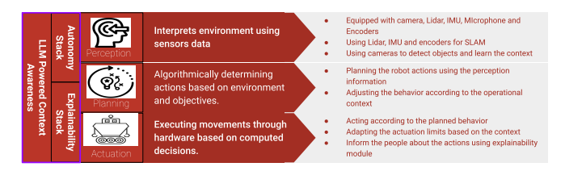

Publications
ManeuverGPT-Agentic Control for Safe Autonomous Stunt Maneuvers
Novel approach combining large language models with traditional motion planning techniques for high-sped maneuvers.
LLM-Enhanced Path Planning: Safe and Efficient Autonomous Navigation with Instructional Inputs
Framework for integrating language models into robotics planning systems, enabling more intuitive human-robot interaction and improved decision-making capabilities.
Explainable Autonomous Mobile Robots: Interface and Socially Aware Learning
Investigation into making autonomous mobile robot decisions more transparent and interpretable to human operators and collaborators.

A Review On Wind Farm Reliability With Hybrid Cable Connection
Book chapter contribution on systematic approaches to improving wind farm reliability .